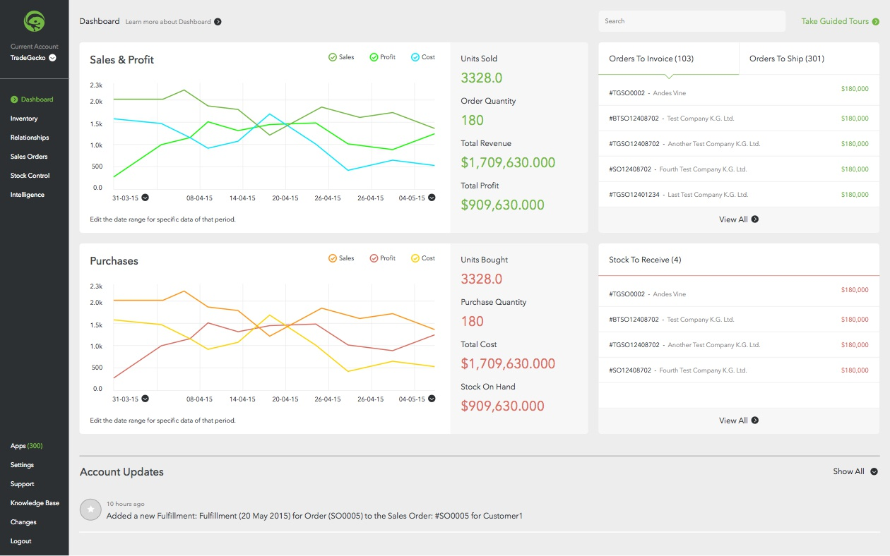
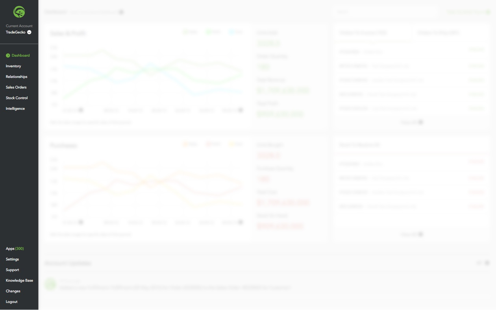
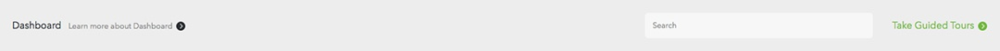
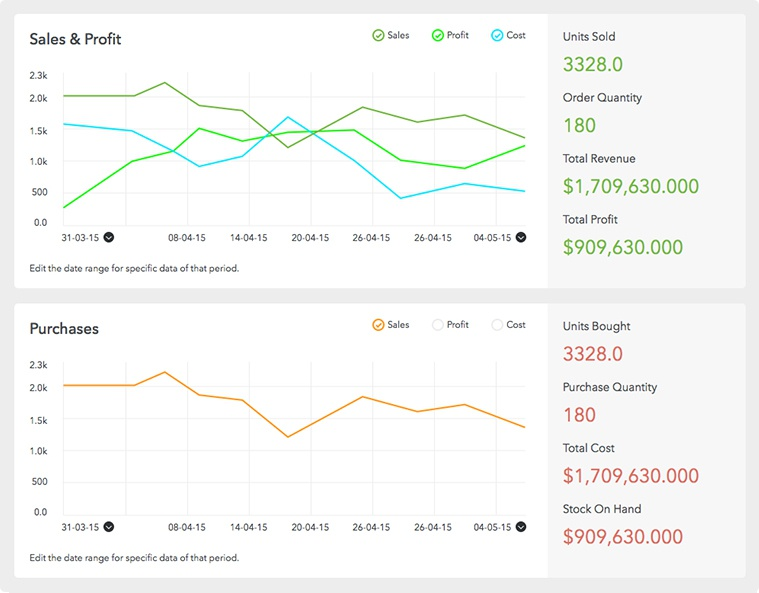
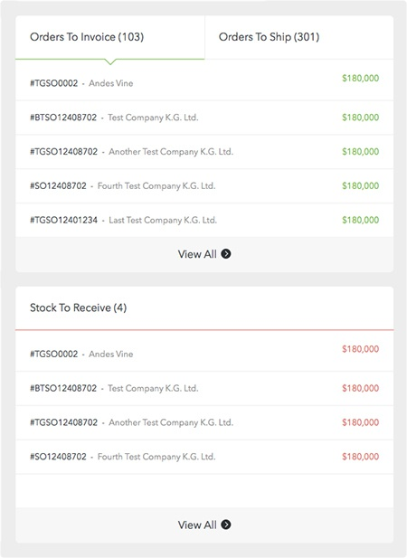
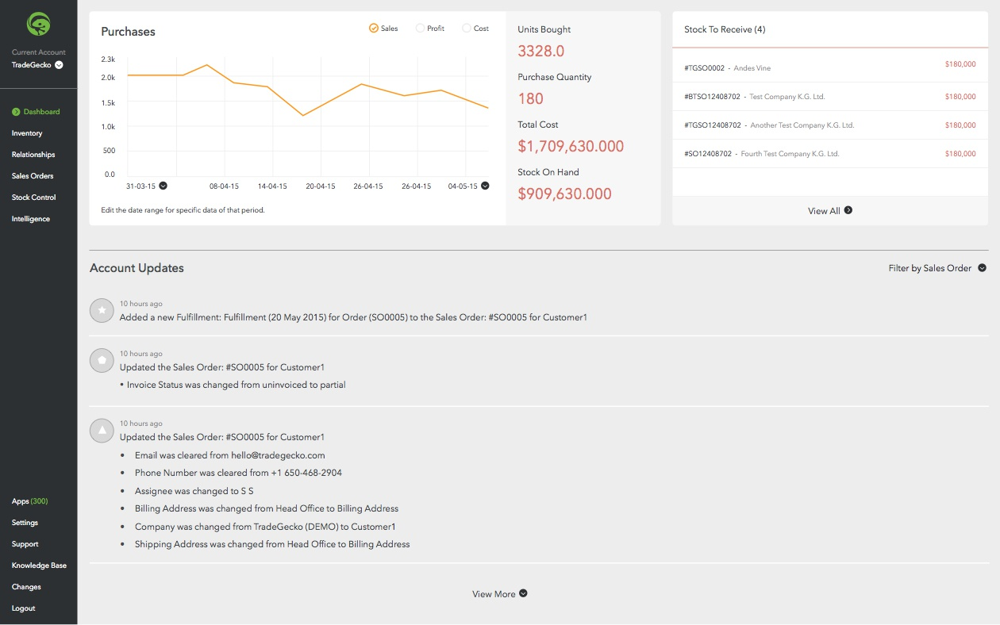

Design Test - TradeGecko Dashboard Re-design

TradeGecko is an inventory and order management platform, for which I had taken this dashboard re-design test. Inventory management is quite a complex process, but crucial for any business. Having limited knowledge about these processes, I learned few things about them after trying out the actual TradeGecko tool. One of the most important thing would be that inventory management has two major aspects - Sales and Purchases. Almost all other aspects come under either of the two. Basis that, here is what I think will be an ideal interface for the dashboard.
Dashboard being a summary of all the data, I divided it into two major sections - Sales and Purchases. This categorisation along with colour coding helps organise the data making it easy to understand. Since everything related to orders comes under sales, I have combined the two order panels in tabular format, making top half of the dashboard a clutter-free overview of the Sales. Similarly, the lower half section has the Purchases and Stock to Receive panel, giving a complete overview of the Purchases.
Left Sidebar
Considering there might be more than one account per user, I think it should be upfront along with other links. I made the sidebar less wide by removing the icons, as they are not recognizable or helpful in communicating at such tiny dimensions. Icons will only appear to highlight the current page.

Header
Existing design has help options (Learn More and Guided Tours) scattered over the page. I moved the ‘Learn More’ tab to the top placing it contextually next to the title. The Guided Tours tab is collapsed and moved to the header as it is more a part of the ‘toolbar’ than the ‘data’. On clicking these help options, a panel will slide from the respective side.

Sales and Purchases Panel
Data, that is the numbers and the graphs, turns into easy-to-understand information, by colour coding and strong typography. The shades of green and red, show the different values in the graph, while staying within the respective colour code. Also I think the feature of customising data by selecting specific date range along with toggling of values (cost, profit, sales) will be beneficial to the user.

Orders and Stocks Panel
Dashboard being just an overview, only 5 recent orders / stock details will be displayed with an option to view them all.

Account Updates
The categorisation is subtle by using only icons on the left side. An option to view specific updates (sales order, variant, fulfillment, etc) will help filtering them.
